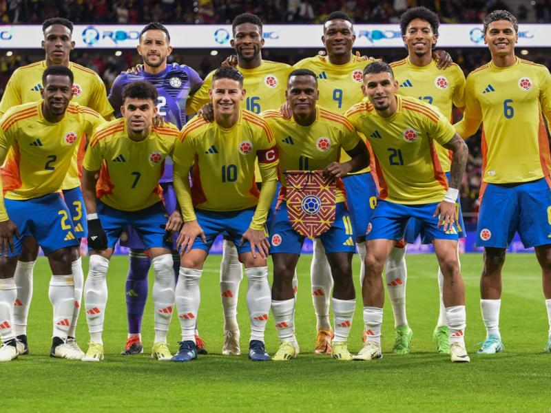
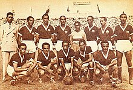
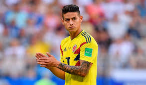
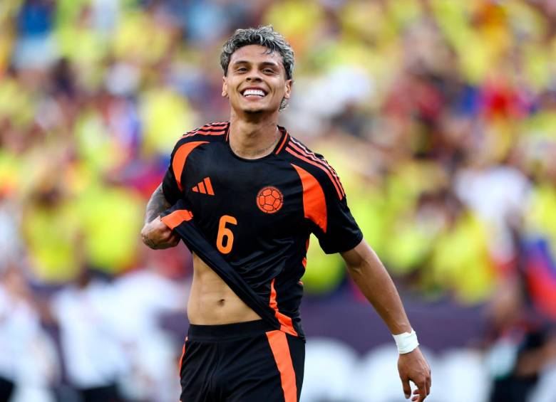

La selección de fútbol de Colombia es el equipo que representa a dicho país en las competiciones oficiales de fútbol masculino desde 1924. Su organización está a cargo de la Federación Colombiana de Fútbol y desde 1936 se encuentra afiliada tanto a la FIFA como a la Conmebol, de la cual es miembro asociado.
Historia

Selección Colombia en el Campeonato Suramericano de 1945.
A pesar de que la Federación Colombiana de Fútbol se afilió a la CSF (Confederación Sudamericana de Fútbol) en 1936, Colombia no debutó en un concurso organizado por esta hasta 1945, año de su primera participación en un Campeonato Suramericano de Fútbol.13 En dicho certamen, por primera vez la Selección se enfrentó a los grandes equipos del fútbol sudamericano, Brasil, Uruguay y Argentina,14 aunque perdió contra todos ellos, incluyendo la selección de Chile. Sin embargo, logró vencer a la selección de Ecuador, empatar contra Bolivia, lo que le alcanzó para acabar en el quinto lugar y obtener la Copa Mariscal Sucre destinada al mejor equipo bolivariano en el torneo.15 La participación en el Sudamericano fue importante para el equipo, pues enfrentó a países donde el fútbol ya era profesional y tenía mucho más arraigo que en Colombia; además, no existía un campeonato nacional en ese entonces.
En 1926, en el Estadio Moderno Julio Torres de Barranquilla, se realiza el primer encuentro internacional de Colombia. El partido entre una selección de Costa Rica y una selección de Colombia termina con los locales ganando cuatro goles por uno.
Datos Generales
| País |
Colombia |
| Código FIFA |
COL |
| Federación |
Federación Colombiana de Fútbol |
| Confederación |
Conmebol |
| Seudónimo(s) |
- Los cafeteros
- La tricolor
- La fiebre amarilla
|
| Seleccionador |
Néstor Lorenzo (desde 2022) |
| Capitán |
James Rodríguez |
| Más goles |
Radamel Falcao (36) |
| Más partidos |
David Ospina (127) |
| Clasificación FIFA |
12.º (junio de 2024) |
| Títulos ganados |
3 |
| Finales jugadas |
3 |
Estadio(s)
- Metropolitano, Barranquilla
Jugadores destacados

James Rodríguez

Richard Ríos
Radamel Falcao
Seleccion Colombia en la Copa America